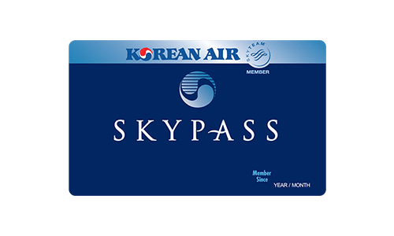
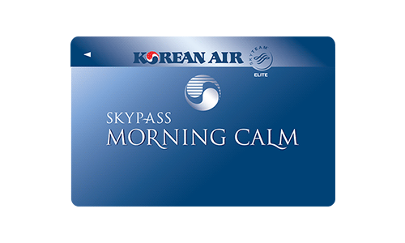
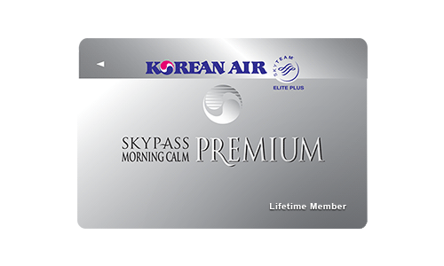
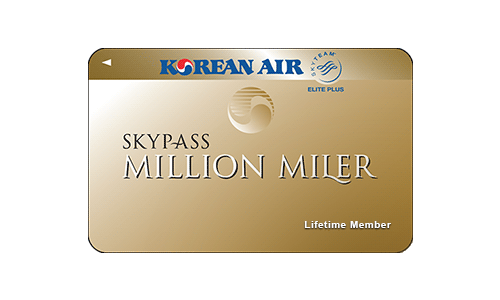

스카이패스 회원 혜택
우수 회원 제도
스카이패스 클럽
스카이패스 회원 가입
- 누구나 회원으로 가입할 수 있습니다.
- 만 12세 미만 어린이는 스카이패스 주니어 회원으로 가입 됩니다.
- 홈페이지, 모바일 홈페이지, 지점, 공항, 기내, 스카이패스 제휴 신용카드 발급 등을 통해 가입할 수 있습니다.
- 스카이패스 회원인 경우에도 대한항공 홈페이지 이용을 위해서는 별도의 홈페이지 회원 가입이 필요합니다.
스카이패스 회원 혜택
- 대한항공은 물론 제휴 호텔, 렌터카, 신용카드를 통해 마일리지를 적립할 수 있습니다.
- 적립된 마일리지로 보너스 항공권, 좌석승급을 비롯한 다양한 혜택을 받을 수 있습니다.
- 회원등급에 따라 대한항공 또는 스카이팀 항공사를 이용하실 때 다양한 혜택을 누릴 수 있습니다.
- 대한항공 또는 스카이팀 공통 우수회원 혜택 이용을 위해 회원카드(모바일 스카이패스 카드 포함)를 제시하여 주시기 바랍니다.
모닝캄 클럽
모닝캄 클럽 자격
- 대한항공 5만 마일 이상 탑승 또는
- 대한항공 탑승횟수 40 회 이상* 또는
- 대한항공 탑승 3만 마일 이상이면서 제휴사 이용 실적과 합하여 5만 마일 이상 적립하면 모닝캄 클럽 회원 자격이 부여됩니다.
모닝캄 클럽 자격 유지 조건
모닝캄 클럽의 자격 유지를 위해서는 자격 유효기간인 2년 동안 아래 조건 중 하나를 충족해야 합니다.- 대한항공 3만 마일 이상 탑승
- 대한항공 20회(*) 이상 탑승
- 대한항공 탑승실적이 2만 마일 또는 15회(*) 이상이고 제휴사 이용실적과 합하여 3만 마일 이상을 적립해야 합니다.
모닝캄 클럽 혜택
- 모닝캄 클럽 전용 탑승수속 카운터를 이용할 수 있습니다.
- 모닝캄 카운터 미운영 공항에서는 SkyPriority 카운터를 이용하시기 바랍니다.
- 무료 위탁수하물 1개를 추가로 허용합니다. (단, 미주노선 일반석 제외)
- 대한항공 이용 시 수하물을 우선적으로 처리해 드립니다.
- 예약 대기 시 좌석을 우선적으로 지원합니다. (동일 예약 등급의 경우에만 적용되며, 공항 대기는 제외됩니다.)
- 스카이팀 엘리트 회원 혜택을 제공합니다.
- 대한항공이 직접 운영하는 프레스티지 클래스 라운지를 이용할 수 있습니다. (2년간 총 4회) KAL 라운지 안내
* 라운지 이용은 대한항공편(대한항공 편명으로 발권된 경우에 한하며, 스카이팀 및 제휴항공사 이용시 제외) 탑승 당일 출발지 공항에서 가능하며, 라운지 좌석 사정에 따라 이용이 제한될 수 있습니다.
유의사항
- 자격 유지 조건을 충족하지 못할 경우, 일반회원으로 자동 전환됩니다. 일반회원으로 전환된 날로부터 매 2년 단위로 설정되는 재심사기간 내에 모닝캄 자격 유지조건을 충족하게 되면 모닝캄 클럽 회원으로 다시 변경됩니다.
- 모닝캄 클럽 회원 자격 유지 또는 재취득을 위한 마일리지는 자격 갱신일 기준으로 새롭게 계산됩니다.
모닝캄 프리미엄 클럽
모닝캄 프리미엄 클럽 자격
대한항공(스카이팀 항공사 포함) 탑승마일이 50만 마일 이상이면 모닝캄 프리미엄 클럽 자격이 부여됩니다. * 스카이팀 이외의 제휴 항공사 탑승, 신용카드사 등의 제휴사 이용 및 이벤트로 적립한 마일리지는 자격 산정 조건에서 제외됩니다.모닝캄 프리미엄 클럽 혜택
- 밀리언 마일러, 모닝캄 프리미엄 전용 탑승수속 카운터를 이용할 수 있습니다.
- 전용 카운터 미운영 공항에서는 일등석 카운터를 이용할 수 있습니다.
- 무료 위탁수하물 1개를 추가로 허용합니다.
- 대한항공 및 스카이팀 항공사 운항편을 이용할 때 수하물을 우선적으로 처리해 드립니다.
- 해당 예약 등급이 만석일 경우, 우선 대기 가능합니다. (동일 예약 등급의 경우에만 적용됩니다.)
- 스카이팀 엘리트 플러스 회원 혜택을 제공합니다.
- 동반 1인과 함께 프레스티지 클래스 라운지를 이용할 수 있습니다.
- 대한항공 직영 라운지를 운영하는 공항에서 프레스티지 클래스로 출발하시는 경우, 인천공항은 마일러 클럽 라운지를, 그 외 직영 일등석 라운지 운영 공항에서는 일등석 라운지를 이용하실 수 있습니다. (공항 사정에 따라 KAL 일등석 라운지 미운영 및 임차 라운지 이용 불가 지점이 있을 수 있습니다.)
- 보너스 항공권을 이용할 때 성수기에도 평수기 마일리지를 적용 받습니다.
- 보너스항공권 예약변경(재발행) 수수료가 면제됩니다.
밀리언 마일러 클럽
밀리언 마일러 클럽 자격
대한항공(스카이팀 항공사 포함) 탑승마일이 100만 마일 이상이면 밀리언 마일러 클럽 자격이 부여됩니다. * 스카이팀 이외의 제휴 항공사 탑승, 신용카드사 등의 제휴사 이용 및 이벤트로 적립한 마일리지는 자격 산정 조건에서 제외됩니다.밀리언 마일러 클럽 혜택
- 밀리언 마일러, 모닝캄 프리미엄 전용 탑승수속 카운터를 이용할 수 있습니다.
- 전용 카운터 미운영 공항에서는 일등석 카운터를 이용할 수 있습니다.
- 무료 위탁수하물 1개를 추가로 허용합니다.
- 대한항공 및 스카이팀 항공사 운항편을 이용할 때 수하물을 우선적으로 처리해 드립니다.
- 해당 예약 등급이 만석일 경우, 최우선 대기 가능합니다. (동일 예약 등급의 경우에만 적용됩니다.)
- 스카이팀 엘리트 플러스 회원 혜택을 제공합니다.
- 동반 1인과 함께 프레스티지 클래스 라운지를 이용할 수 있습니다.
- 대한항공 직영 라운지를 운영하는 공항에서 프레스티지 클래스로 출발하시는 경우, 인천공항은 마일러 클럽 라운지를, 그 외 직영 일등석 라운지 운영 공항에서는 일등석 라운지를 이용하실 수 있습니다. (공항 사정에 따라 KAL 일등석 라운지 미운영 및 임차 라운지 이용 불가 지점이 있을 수 있습니다.)
- 보너스 항공권을 이용할 때 성수기에도 평수기 마일리지를 적용받습니다.
- 보너스항공권 예약변경(재발행) 수수료가 면제됩니다.
- 전용 전화상담 서비스를 받으실 수 있습니다. (한국지역만 가능)
유의사항
- KAL 라운지 미운영 또는 임차 라운지 이용 불가 공항이 있을 수 있습니다.
- 타항공사가 운항하는 공동운항편을 이용하거나, 타항공사 구간이 포함된 여정을 여행하는 경우 일부 서비스가 제한될 수 있습니다.
- 타항공사 편명의 대한항공 운항편 이용 시(대한항공 편명으로 발권되지 않은 경우) 우수회원 혜택이 적용되지 않습니다.
- 대한항공 또는 스카이팀 공통 우수회원 혜택 이용을 위해 회원카드(모바일 스카이패스 카드 포함)를 제시하여 주시기 바랍니다.
- 추가 무료 수하물 혜택은 다음과 같이 적용됩니다.
- 모닝캄 클럽 회원
- 일등석/프레스티지석 : 32kg 1개
- 일반석 : 23kg 1개 (단, 미주 노선 일반석 제외)
- 모닝캄 프리미엄 클럽 회원
- 일등석/프레스티지석 : 32kg 1개
- 일반석 : 23kg 1개
- 밀리언마일러 클럽 회원
- 일반석, 일등석/프레스티지석 : 32kg 1개
- 모닝캄 클럽 회원
스카이팀 공동 혜택
- 대한항공을 포함한 스카이팀 항공사의 엘리트 회원에게는 스카이팀 공동 혜택이 제공됩니다.
- 대한항공의 모닝캄 클럽 회원은 스카이팀 엘리트 회원에, 모닝캄 프리미엄 및 밀리언 마일러 클럽 회원은 스카이팀 엘리트 플러스 회원에 해당됩니다.
- 예약 시 우수회원임을 밝히시고, 공항에서 스카이패스 회원카드(모바일 스카이패스 카드 포함)를 제시하셔야 혜택을 받으실 수 있습니다.
가족 마일리지 제도
보너스 가족 양도
회원 본인의 마일리지를 사용하여 등록된 가족에게 보너스를 제공할 수 있습니다.가족 마일리지 합산
- 가족 마일리지 합산은 회원 본인을 포함하여 5인까지 가능합니다.
- 가족 마일리지 합산을 위해서는 가족 회원의 동의가 필요합니다.
- 가족 마일리지 합산 시 사용할 가족의 마일리지와 합산 순서를 지정할 수 있습니다.
- 보너스를 일부 사용 후 환불 시에는, 유효기간이 긴 마일부터 환급해드립니다.
- 일부 보너스는 합산에 제한이 있을 수 있습니다.
- 가족 합산 동의를 하시면 가족 회원이 회원님의 잔여 마일을 확인할 수 있고, 언제든지 마일리지를 합산하여 보너스를 발급 받을 수 있습니다.
- 가족 합산 동의는 철회하실 때까지 지속적으로 유효하며, 홈페이지를 통해 언제든지 신청/철회가 가능합니다.
양도, 합산이 가능한 가족 범위
배우자, 자녀, 부모, 형제자매, 조부모, 손자녀, 배우자의 부모, 사위 며느리가 가족의 범위에 속합니다.가족 등록/변경하기
- 보너스를 양도하거나 가족의 마일리지를 합산하기 위해서는 사전에 가족 등록을 해야 합니다.
- 가족 등록 신청서 및 가족 증빙서류를 준비하여 홈페이지, 팩스 또는 지점을 통해 신청할 수 있습니다.
- 팩스: 02-2656-8989 (한국), 310-417-5696 (미주), 06-6264-3438 (일본)
- 홈페이지 및 팩스 신청 시 등록 완료에 근무일 기준(주말,공휴일 제외) 약 2일 정도 소요되며, 홈페이지의 ‘마이페이지’ 메뉴에서 확인할 수 있습니다.
- 가족관계에 변동사항이 있는 경우, 등록 신청과 동일한 방법으로 변경 신청하여 주시기 바랍니다.
양도, 합산을 통한 보너스 발급
홈페이지 또는 지점에서 보너스를 발급 받을 수 있습니다. 지점 방문의 경우, 신분증과 보너스 지급 신청서를 지참해야 합니다. 지점에서 보너스 발급하기 양도, 합산이 가능한 보너스 보기 보너스 지급 신청서 새창 열기제휴사 할인 혜택
호텔/리조트
제주/서귀포 KAL 호텔 리솜 리조트 호텔카푸치노렌터카
Rentalcars.com 롯데 SK AVIS Hertz쇼핑/통신
이하넥스 sk 텔링크공연/문화 예술/영화
예술의전당 제주 민속촌 키자니아 한화아쿠아플라넷 제주 이안 아트컨설팅 메가박스음식점
썬앳푸드의료
인하대 병원 인하국제의료센터상용기업 우대제도 (CBMS)
가입 대상
- 20인 이상의 스카이패스 회원이 정규직원으로 근무하는 영리 목적의 일반 법인 기업은 가입이 가능합니다. * 정부기관, 정부투자기관, 정부기관 산하 단체, 학교법인, 협회, 종교단체, 해외 인력 송출 단체 및 여행 관련 업체는 가입하실 수 없습니다.
- 그룹사 단위로는 가입이 불가하며, 기업 합병 시 1개사 명의로 변경됩니다.
신규 가입 및 변경
- 소속 임직원의 스카이패스 회원번호 및 마일리지 적립 내용 활용에 대한 동의와 해당 정보의 대한항공 제공에 대한 동의를 사전에 소속 임직원으로부터 받은 후, 회사 직인과 명판이 포함된
가입신청서 원본, 사업자등록증 사본, 소속 임직원 재직 증명서 원본을 지점을 방문하여 제출하시거나 우편으로 보내주시기 바랍니다.
- - 보내실 곳: 서울특별시 강서구 양천로 13, 3층 대한항공 상용기업우대제도 담당자 앞 (우 07516)
- - 지점 연락처 안내
- 회사 또는 회원의 변동 사항이 발생한 경우, 변동 신청서를 작성하여 팩스(02-2656-8601)로 제출하여 주시기 바랍니다.
- 스카이패스 회원에 한해 회원사의 임직원 등록이 가능합니다.
회원사 직원 관리 규정 안내
대한항공은 회원사 및 소속 회원의 변동 사항을 적기에 반영하기 위하여 사업자등록증 사본, 소속 임직원 재직 증명서 원본 등의 서류를 년 1회 요청할 수 있습니다.이 때 적절한 서류를 제출하지 않을 경우, 상용기업 우대제도 유지 의사가 없음으로 간주하여 계좌가 소멸될 수 있습니다.
서류의 위/변조 및 허위 기재 등으로 마일리지를 부당하게 적립하거나 사용한 경우, 회원 자격 취소, 적립된 마일리지 회수 및 사용된 보너스 해당 구간의 유상 운임에 상응하는 손해배상 등의 법적 조치를 취할 수 있습니다.
상용기업우대제도 마일리지 적립
마일리지 적립 안내
- 예약, 발권 및 탑승 수속 시 여행하시는 회원사 임직원의 스카이패스 번호를 알려주시면 탑승 후 임직원 본인의 스카이패스 및 회원사 마일리지가 자동 적립됩니다.
- 상용기업우대제도 마일리지는 대한항공편 탑승실적에 한해 적립되며, 제휴항공사 및 기타 제휴사 실적 등은 적립되지 않습니다.
- 회원사 마일리지는 임직원의 스카이패스 마일리지와 동일하게 적립되며, 상세한 마일리지 적립 기준은 마일리지 적립 메뉴에서 확인하여 주시기 바랍니다.
회원사 탑승 실적 안내
적립/사용 실적 확인- 로그인 비밀번호 관리에 각별히 유의하여 주시기 바랍니다.
- 회원사 정보에 대한 유지 관리 책임은 회원사에 있으며, 정보 변경 내역이 대한항공에 고지되지 않음으로 인해 발생하는 결과에 대해 대한항공은 책임이 없음을 양지하여 주시기 바랍니다.
마일리지 사용안내
- 마일리지의 사용 기간은 적립한 다음 해 3월 1일부터 1년 간이며, 기간 내 사용하지 않은 마일리지는 소멸됩니다.
- 연간 사용 가능한 마일은 적립한 마일리지 중 80만 마일까지입니다.
- 마일리지는 보너스 항공권 발급 및 좌석 승급에 사용하실 수 있습니다.
보너스 항공권 및 좌석 승급 보너스 발급
- 서비스 센터(1588-2001)에서 예약하신 후, 지점을 방문해 보너스 항공권 및 좌석승급 보너스를 발급받으실 수 있습니다.
- 지점 방문 시, 보너스 지급 신청서와 보너스를 사용할 임직원의 재직증명서 원본을 지참하셔야 합니다.>
- 보너스를 사용할 임직원은 반드시 회원사의 상용기업우대제도(CMBS) 회원으로 등록되어 있어야 합니다.
- 보너스 발급은 동일 지역 왕복 여정 기준이며, 편도만 이용 시에도 왕복 마일리지가 공제됩니다.
- 공항에서는 보너스를 신청하실 수 없습니다.
- 일등석 보너스 항공권은 발급하실 수 없으며, 프레스티지석에서의 좌석 승급은 가능합니다.
유효기간 및 마일리지 환급
- 보너스 항공권은 발권일로부터 1년간 유효합니다.
- 좌석승급은 좌석승급을 적용한 항공권의 유효기간과 동일합니다.
- 유효기간 연장 및 마일리지 환급은 불가합니다.
성수기 기간
- 성수기 기간 중에는 비수기보다 더 많은 마일리지가 공제됩니다.
- 왕복 여정 중 한 구간이라도 성수기에 사용하실 경우, 전체 여정 모두 성수기 공제 마일리지가 적용됩니다.
보너스 사용 시 유의 사항
- 보너스 발급 후 사용인 변경, 구간 변경, 비수기에서 성수기로의 변경은 불가합니다./li>
- 상용기업우대제도(CMBS) 마일리지와 개인의 스카이패스 마일리지를 합하여 사용하실 수 없습니다.